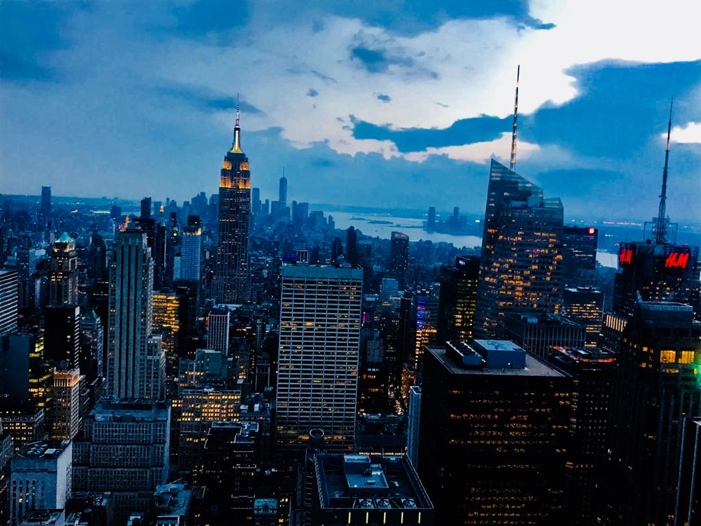
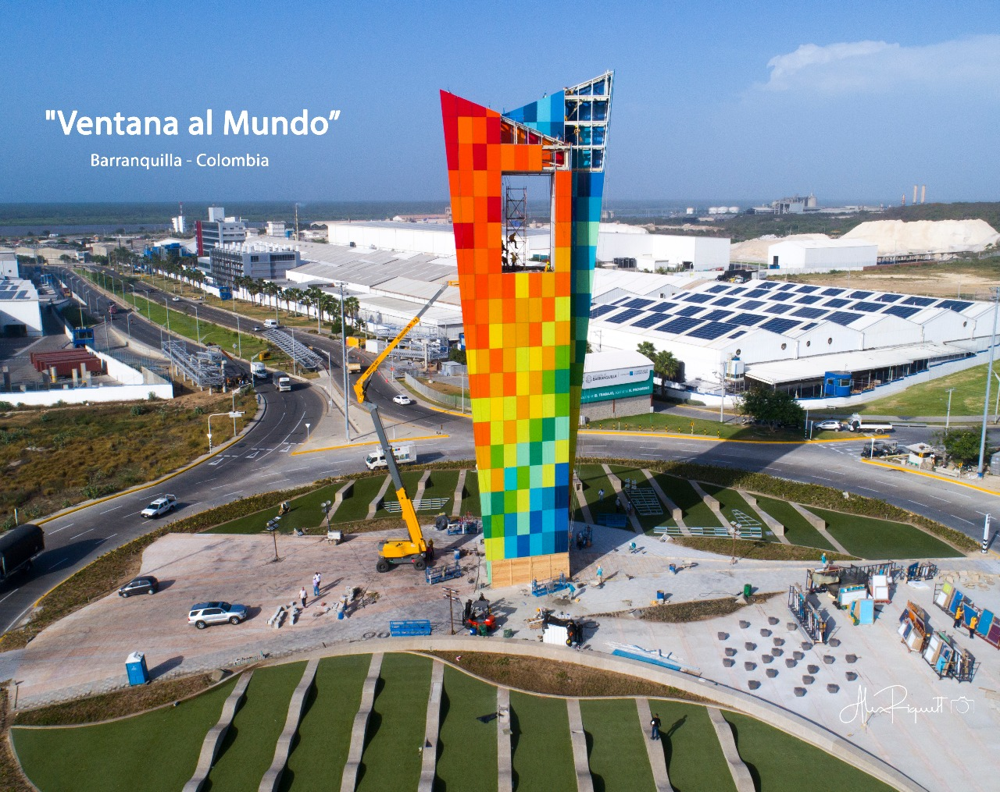

New York
New York City (NYC), often called simply New York, is the most populous city in the United States. With an estimated 2019 population of 8,336,817 distributed over about 302.6 square miles (784 km2), New York City is also the most densely populated major city in the United States. Located at the southern tip of the U.S. state of New York, the city is the center of the New York metropolitan area, the largest metropolitan area in the world by urban landmass.With almost 20 million people in its metropolitan statistical area and approximately 23 million in its combined statistical area, it is one of the world's most populous mega cities. New York City has been described as the cultural, financial, and media capital of the world, significantly influencing commerce,entertainment, research, technology, education, politics, tourism, art, fashion, and sports. Home to the headquarters of the United Nations, New York is an important center for international diplomacy.Situated on one of the world's largest natural harbors, New York City is composed of five boroughs, each of which is a county of the State of New York. The five boroughs—Brooklyn, Queens, Manhattan, the Bronx, and Staten Island—were consolidated into a single city in 1898.The city and its metropolitan area constitute the premier gateway for legal immigration to the United States. As many as 800 languages are spoken in New York,making it the most linguistically diverse city in the world. New York is home to more than 3.2 million residents born outside the United States,the largest foreign-born population of any city in the world as of 2016. As of 2019, the New York metropolitan area is estimated to produce a gross metropolitan product (GMP) of $2.0 trillion. If the New York metropolitan area were a sovereign state, it would have the eighth-largest economy in the world. New York is home to the highest number of billionaires of any city in the world.The more enduring industry for which New York City is best known – the financial world of Wall Street – dates to the era of the American Revolution. The New York Stock Exchange, with a market capitalization of more than $20 trillion, is the world's largest stock exchange. It was founded in 1792 when 24 stockbrokers signed an agreement beneath a Buttonwood tree on Wall Street at the south end of Manhattan, near the Battery.
Las Vegas
 In 1941 the El Rancho Vegas resort opened on a section of U.S. 91 just outside the city’s jurisdiction. Other hotel-casinos soon followed, and the section of highway became known as “the Strip.” Most were built around the regional or Old West themes that were popular on Fremont Street. In 1946 mobster Bugsy Siegel, backed by East Coast Jewish gangster Meyer Lansky’s Mexican drug money, opened the Flamingo, a swank resort that took its cues from Hollywood, not Deadwood. Top-drawer talent was booked for its lounges and dozens of celebrities attended its Christmas Day opening.Siegel was murdered in 1947, but his vision for Las Vegas lived on: During the 1950s and 1960s, mobsters helped build the Sahara, the Sands, the New Frontier and the Riviera. Money from organized crime combined with funds from more respectable investors—Wall Street banks, union pension funds, the Mormon Church and the Princeton University endowment. Tourists flocked to the resorts—8 million a year by 1954—drawn by performers such as Frank Sinatra, Dean Martin and Elvis Presley, and by rows of slot machines and gaming tables.
From the 1940s onward Las Vegas enjoyed a military boom as World War II bases gave way to Cold War facilities, most famously the Nevada Test Site, where over 100 nuclear bombs were detonated above ground between 1951 and 1963. Mushroom clouds were often visible from the hotels on the Strip, and postcards proclaimed Las Vegas the “Up and Atom City.”
Las Vegas: The Rise of the Mega-Casinos
In 1966 Howard Hughes checked into the penthouse of the Desert Inn and never left, preferring to buy the hotel rather than face eviction. He bought other hotels too—$300 million worth—ushering in an era in which mob interests were displaced by corporate conglomerates.
In 1989 longtime casino developer Steve Wynn opened the Mirage, the city’s first mega-resort. Over the next two decades the strip was transformed yet again: Old casinos were dynamited to make room for massive complexes taking their aesthetic cues from ancient Rome and Egypt, Paris, Venice, New York and other glamorous escapes.
Casinos and entertainment remained Las Vegas’ major employer, and the city grew with the size of the resorts and the numbers of annual visitors. In 2008, even as residents faced recession, rising unemployment and a housing price collapse, the city still received nearly 40 million visitors.
In 1941 the El Rancho Vegas resort opened on a section of U.S. 91 just outside the city’s jurisdiction. Other hotel-casinos soon followed, and the section of highway became known as “the Strip.” Most were built around the regional or Old West themes that were popular on Fremont Street. In 1946 mobster Bugsy Siegel, backed by East Coast Jewish gangster Meyer Lansky’s Mexican drug money, opened the Flamingo, a swank resort that took its cues from Hollywood, not Deadwood. Top-drawer talent was booked for its lounges and dozens of celebrities attended its Christmas Day opening.Siegel was murdered in 1947, but his vision for Las Vegas lived on: During the 1950s and 1960s, mobsters helped build the Sahara, the Sands, the New Frontier and the Riviera. Money from organized crime combined with funds from more respectable investors—Wall Street banks, union pension funds, the Mormon Church and the Princeton University endowment. Tourists flocked to the resorts—8 million a year by 1954—drawn by performers such as Frank Sinatra, Dean Martin and Elvis Presley, and by rows of slot machines and gaming tables.
From the 1940s onward Las Vegas enjoyed a military boom as World War II bases gave way to Cold War facilities, most famously the Nevada Test Site, where over 100 nuclear bombs were detonated above ground between 1951 and 1963. Mushroom clouds were often visible from the hotels on the Strip, and postcards proclaimed Las Vegas the “Up and Atom City.”
Las Vegas: The Rise of the Mega-Casinos
In 1966 Howard Hughes checked into the penthouse of the Desert Inn and never left, preferring to buy the hotel rather than face eviction. He bought other hotels too—$300 million worth—ushering in an era in which mob interests were displaced by corporate conglomerates.
In 1989 longtime casino developer Steve Wynn opened the Mirage, the city’s first mega-resort. Over the next two decades the strip was transformed yet again: Old casinos were dynamited to make room for massive complexes taking their aesthetic cues from ancient Rome and Egypt, Paris, Venice, New York and other glamorous escapes.
Casinos and entertainment remained Las Vegas’ major employer, and the city grew with the size of the resorts and the numbers of annual visitors. In 2008, even as residents faced recession, rising unemployment and a housing price collapse, the city still received nearly 40 million visitors.
Barranquilla
Barranquilla, on Colombia’s Caribbean coast, is a busy industrial city. It’s a less obvious destination for visitors compared to picturesque Cartagena to the south and Santa Marta—close to Tayrona National Park—to the north. But accommodation and flights are much cheaper, and Barranquilla is only a couple of hours away from its more famous neighbors. I always make it my headquarters when I spend time in the region. I’m a born-and-bred quillero with hometown pride. Barranquilla is nicknamed Colombia’s Golden Gate, because as an important port city it was the gateway for progress in Colombia: aviation, telephones, radio, trains, and fútbol all came to Barranquilla first. Come for the carnival. In 2003, UNESCO declared Barranquilla’s carnival—Colombia’s largest—a masterpiece of humanity’s oral and intangible heritage. For four days, offices and businesses shut down and the streets fill with traditional costumes, parades, and general revelry. It’s the only time of year that Barranquilla swells with both domestic and international tourists (240,000 showed up for carnival in February 2016) and hotels and flights become really expensive. Plan ahead.Get breakfast at a frutería. These café-like joints bring you the strange culinary bedfellows of rich, fried food and healthy, fresh fruit juice. Choose from empanadas (dough stuffed with ground beef, chicken, or cheese), carimañolas (torpedo-shaped yucca dough, stuffed meat or cheese), arepas de huevo (corn dough stuffed with fried egg), or papas rellenas (fried balls of mashed potatoes filled with ground beef). Don’t forget the suero costeño, a cream cheese dip. To drink, choose from orange, corozo, tangerine, lemon, lulo, passion fruit, pineapple, tamarind, blackberry, watermelon, carrot, and sapodilla juice. Fruterías are all over the place, but my favorites are Los Compadres (a few blocks north of Romelio Martínez stadium) and Los Primos, in Delicias quarter.Double up on fish. Barranquilla is lucky enough to have access to the Atlantic Ocean and the Magdalena river, which means you’re spoiled for choice if you happen to like fish. Head to Las Flores, a quarter along the river with restaurants offering fresh catch from both bodies of water. (Try the great but reasonably-priced El Rincón del Proveedor.) From the sea, go for fried mojarra, coconut rice, and patacón (fried plantain slices). From the river, try bocachico, a fish stuffed with sautéed tomatoes, onions, sweet pepper, and garlic, wrapped in leaves from the bijao tree, and grilled.